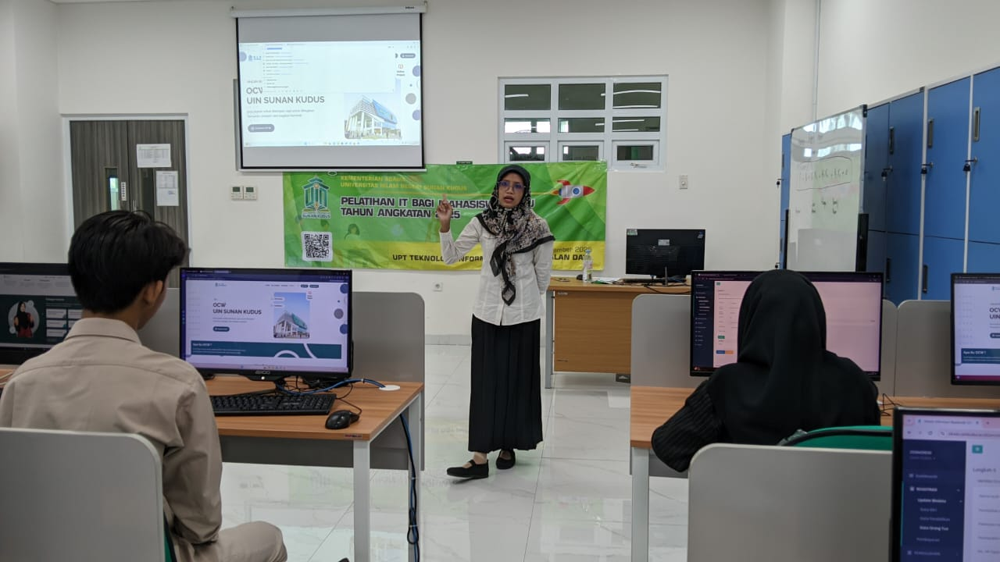

Perkembangan teknologi digital yang semakin pesat menuntut dunia pendidikan untuk beradaptasi dan berinovasi. Sebagai bagian dari transformasi menuju kampus digital, UIN Sunan Kudus terus berkomitmen mengembangkan kemampuan teknologi informasi di lingkungan civitas akademika. Salah satu wujud nyata dari komitmen tersebut adalah pelatihan IT yang diselenggarakan secara berkelanjutan bagi dosen, tenaga kependidikan, dan mahasiswa.
Pelatihan ini bertujuan untuk memperkuat literasi digital dan meningkatkan kemampuan dalam memanfaatkan teknologi untuk kegiatan akademik, administrasi, dan penelitian. Peserta tidak hanya diperkenalkan pada berbagai perangkat lunak dan sistem informasi kampus, tetapi juga dilatih untuk memahami keamanan data, etika digital, serta pemanfaatan teknologi cloud dan kolaborasi daring.
Melalui kegiatan ini, UIN Sunan Kudus berharap seluruh civitas akademika dapat lebih siap menghadapi tantangan era digital, sekaligus memanfaatkan teknologi sebagai sarana untuk memperkuat kualitas pembelajaran dan layanan akademik.
Dalam pelaksanaan pelatihan, peserta diberikan materi oleh tim ahli dari Pusat Teknologi Informasi dan Pangkalan Data (TIPD) UIN Sunan Kudus. Materi mencakup pengenalan sistem manajemen kampus, penggunaan email resmi institusi, keamanan siber, serta optimalisasi layanan berbasis teknologi seperti e-learning, SIM Akademik, dan platform kolaborasi digital.
Kegiatan ini juga menjadi wadah kolaborasi antara berbagai unit di kampus untuk saling berbagi pengalaman dan ide inovatif. Harapannya, ke depan akan tercipta budaya digital yang adaptif dan produktif, sejalan dengan visi UIN Sunan Kudus sebagai perguruan tinggi Islam yang unggul dalam integrasi ilmu dan teknologi.
Pelatihan IT bukan sekadar kegiatan teknis, tetapi bagian dari strategi besar UIN Sunan Kudus dalam transformasi digital kampus. Dengan peningkatan kapasitas SDM di bidang teknologi, kampus dapat mempercepat proses digitalisasi layanan akademik dan administrasi, sekaligus membentuk ekosistem pendidikan yang lebih efisien, transparan, dan inklusif.
Melalui langkah konkret ini, UIN Sunan Kudus menunjukkan komitmennya untuk terus berinovasi dan bertransformasi menuju masa depan digital yang berdaya saing tinggi, mendukung civitas akademika agar tidak hanya menjadi pengguna teknologi, tetapi juga pencipta dan pengembang inovasi di masa depan.